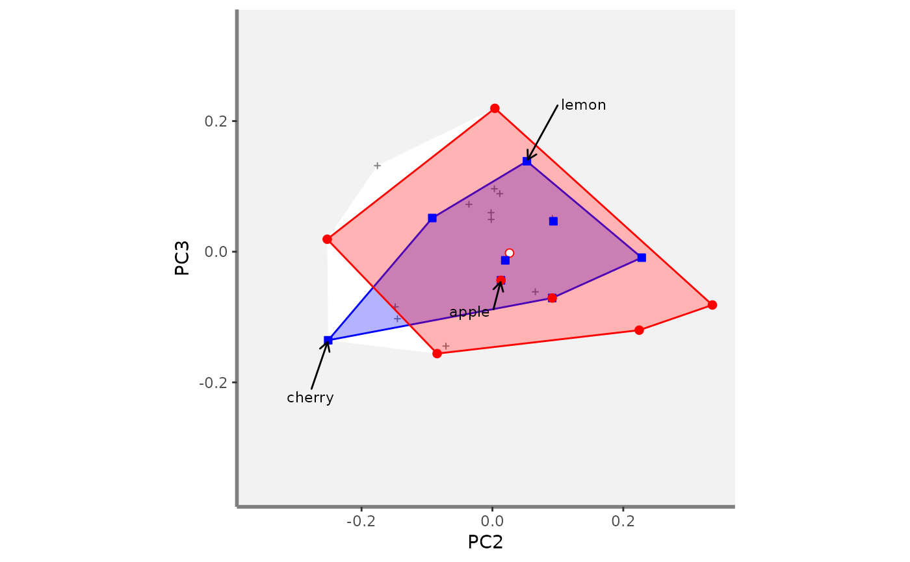
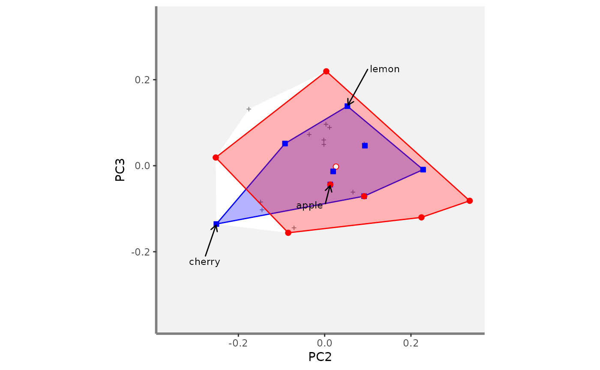

Illustrate Functional beta-Diversity indices for pairs of assemblages in a multidimensional space
Source:R/plot_beta_indices.R
beta.multidim.plot.RdIllustrate overlap between convex hulls shaping species assemblages in a
multidimensional functional space.Before plotting beta functional
diversity indices should have been computed using the
beta.fd.multidim function.
Usage
beta.multidim.plot(
output_beta_fd_multidim,
plot_asb_nm,
beta_family,
plot_sp_nm = NULL,
faxes = NULL,
name_file = NULL,
faxes_nm = NULL,
range_faxes = c(NA, NA),
color_bg = "grey95",
shape_sp = c(pool = 3, asb1 = 22, asb2 = 21),
size_sp = c(pool = 0.7, asb1 = 1.2, asb2 = 1),
color_sp = c(pool = "grey50", asb1 = "blue", asb2 = "red"),
fill_sp = c(pool = NA, asb1 = "white", asb2 = "white"),
fill_vert = c(pool = NA, asb1 = "blue", asb2 = "red"),
color_ch = c(pool = NA, asb1 = "blue", asb2 = "red"),
fill_ch = c(pool = "white", asb1 = "blue", asb2 = "red"),
alpha_ch = c(pool = 1, asb1 = 0.3, asb2 = 0.3),
nm_size = 3,
nm_color = "black",
nm_fontface = "plain",
check_input = TRUE
)Arguments
- output_beta_fd_multidim
the list returned by
beta.fd.multidimwhendetails_returned = TRUE. Thus, even if this function will illustrate functional beta-diversity for a single pair of assemblages, plots will be scaled according to all assemblages for which indices were computed.- plot_asb_nm
a vector with names of the 2 assemblages for which functional beta-diversity will be illustrated.
- beta_family
a character string for the type of beta-diversity index for which values will be printed,
'Jaccard'(default) and/or'Sorensen'.- plot_sp_nm
a vector containing species names that are to be plotted. Default:
plot_nm_sp = NULL(no name plotted).- faxes
a vector with names of axes to plot (as columns names in
output_beta_fd_multidim$details$input$sp_faxes_coord). You can only plot from 2 to 4 axes for graphical reasons. Default:faxes = NULL(the four first axes will be plotted).- name_file
a character string with name of file to save the figure (without extension). Default:
name_file = NULLwhich means plot is displayed.- faxes_nm
a vector with axes labels for figure. Default: as
faxes).- range_faxes
a vector with minimum and maximum values of axes. Note that to have a fair representation of position of species in all plots, they should have the same range. Default:
faxes_lim = c(NA, NA)(the range is computed according to the range of values among all axes).- color_bg
a R color name or an hexadecimal code used to fill plot background. Default:
color_bg = "grey95".- shape_sp
a vector with 3 numeric values referring to the shape of symbol used for species from the 'pool' absent from the 2 assemblages, and for species present in the 2 assemblages ('asb1', and 'asb2'), respectively. Default:
shape_sp = c(pool = 3, asb1 = 22, asb2 = 21)so cross, square and circle.- size_sp
a numeric value referring to the size of symbols for species. Default:
is size_sp = c(pool = 0.8, asb1 = 1, asb2 = 1).- color_sp
a vector with 3 names or hexadecimal codes referring to the colour of symbol for species. Default is:
color_sp = c(pool = "grey50", asb1 = "blue", asb2 = "red").- fill_sp
a vector with 3 names or hexadecimal codes referring to the color to fill symbol (if
shape_sp> 20) for species of the pool and of the 2 assemblages. Default is:fill_sp = c(pool = NA, asb1 = "white", asb2 = "white").- fill_vert
a vector with 3 names or hexadecimal codes referring to the colour to fill symbol (if
shape_sp> 20) for species being vertices of the convex hulls of the pool of species and of the 2 assemblages. Default is:fill_vert = c(pool = NA, asb1 = "blue", asb2 = "red").- color_ch
a vector with 3 names or hexadecimal codes referring to the border of the convex hulls of the pool of species and by the 2 assemblages. Default is:
color_ch = c(pool = NA, asb1 = "blue", asb2 = "red").- fill_ch
a vector with 3 names or hexadecimal codes referring to the filling of the convex hull of the pool of species and of the 2 assemblages. Default is
fill_ch = c(pool = "white", asb1 = "blue", asb2 = "red").- alpha_ch
a vector with 3 numeric value for transparency of the filling of the convex hulls (0 = high transparency, 1 = no transparency). Default is:
alpha_ch = c(pool = 1, asb1 = 0.3, asb2 = 0.3).- nm_size
a numeric value for size of species label. Default is
3(in points).- nm_color
a R color name or an hexadecimal code referring to the color of species label. Default is
black.- nm_fontface
a character string for font of species labels (e.g. "italic", "bold"). Default is
'plain'.- check_input
a logical value indicating whether key features the inputs are checked (e.g. class and/or mode of objects, names of rows and/or columns, missing values). If an error is detected, a detailed message is returned. Default:
check.input = TRUE.
Value
If name_file is NULL, it returns a patchwork
figure with overlap between convex hulls projected in 2-dimensional spaces
for the given pair of assemblages. Values of functional beta-diversity
indices are shown on top-right corner of the figure. If name_file is
not NULL, the plot is saved locally.
Examples
# \donttest{
# Load Species*Traits dataframe:
data("fruits_traits", package = "mFD")
# Load Assemblages*Species dataframe:
data("baskets_fruits_weights", package = "mFD")
# Load Traits categories dataframe:
data("fruits_traits_cat", package = "mFD")
# Compute functional distance
sp_dist_fruits <- mFD::funct.dist(sp_tr = fruits_traits,
tr_cat = fruits_traits_cat,
metric = "gower",
scale_euclid = "scale_center",
ordinal_var = "classic",
weight_type = "equal",
stop_if_NA = TRUE)
#> [1] "Running w.type=equal on groups=c(Size)"
#> [1] "Running w.type=equal on groups=c(Plant)"
#> [1] "Running w.type=equal on groups=c(Climate)"
#> [1] "Running w.type=equal on groups=c(Seed)"
#> [1] "Running w.type=equal on groups=c(Sugar)"
#> [1] "Running w.type=equal on groups=c(Use,Use,Use)"
# Compute functional spaces quality to retrieve species coordinates matrix:
fspaces_quality_fruits <- mFD::quality.fspaces(
sp_dist = sp_dist_fruits,
maxdim_pcoa = 10,
deviation_weighting = "absolute",
fdist_scaling = FALSE,
fdendro = "average")
# Retrieve species coordinates matrix:
sp_faxes_coord_fruits <- fspaces_quality_fruits$details_fspaces$sp_pc_coord
# Get the occurrence dataframe:
asb_sp_fruits_summ <- mFD::asb.sp.summary(asb_sp_w = baskets_fruits_weights)
asb_sp_fruits_occ <- asb_sp_fruits_summ$"asb_sp_occ"
# Compute beta diversity indices:
beta_fd_fruits <- mFD::beta.fd.multidim(
sp_faxes_coord = sp_faxes_coord_fruits[, c("PC1", "PC2", "PC3", "PC4")],
asb_sp_occ = asb_sp_fruits_occ,
check_input = TRUE,
beta_family = c("Jaccard"),
details_returned = TRUE)
#> Serial computing of convex hulls shaping assemblages with conv1
#>
|
| | 0%
|
|======= | 10%
|
|============== | 20%
|
|===================== | 30%
|
|============================ | 40%
|
|=================================== | 50%
|
|========================================== | 60%
|
|================================================= | 70%
|
|======================================================== | 80%
|
|=============================================================== | 90%
|
|======================================================================| 100%
#> Serial computing of intersections between pairs of assemblages with inter_geom_coord
#>
|
| | 0%
|
|== | 2%
|
|=== | 4%
|
|===== | 7%
|
|====== | 9%
|
|======== | 11%
|
|========= | 13%
|
|=========== | 16%
|
|============ | 18%
|
|============== | 20%
|
|================ | 22%
|
|================= | 24%
|
|=================== | 27%
|
|==================== | 29%
|
|====================== | 31%
|
|======================= | 33%
|
|========================= | 36%
|
|========================== | 38%
|
|============================ | 40%
|
|============================== | 42%
|
|=============================== | 44%
|
|================================= | 47%
|
|================================== | 49%
|
|==================================== | 51%
|
|===================================== | 53%
|
|======================================= | 56%
|
|======================================== | 58%
|
|========================================== | 60%
|
|============================================ | 62%
|
|============================================= | 64%
|
|=============================================== | 67%
|
|================================================ | 69%
|
|================================================== | 71%
|
|=================================================== | 73%
|
|===================================================== | 76%
|
|====================================================== | 78%
|
|======================================================== | 80%
|
|========================================================== | 82%
|
|=========================================================== | 84%
|
|============================================================= | 87%
|
|============================================================== | 89%
|
|================================================================ | 91%
|
|================================================================= | 93%
|
|=================================================================== | 96%
|
|==================================================================== | 98%
|
|======================================================================| 100%
#> Serial computing of intersections between pairs of assemblages with inter_rcdd_coord & qhull.opt1
#>
|
| | 0%
|
|======= | 10%
|
|============== | 20%
|
|===================== | 30%
|
|============================ | 40%
|
|=================================== | 50%
|
|========================================== | 60%
|
|================================================= | 70%
|
|======================================================== | 80%
|
|=============================================================== | 90%
|
|======================================================================| 100%
# Compute beta fd plots:
beta.multidim.plot(
output_beta_fd_multidim = beta_fd_fruits,
plot_asb_nm = c("basket_1", "basket_6"),
beta_family = c("Jaccard"),
plot_sp_nm = c("apple", "cherry", "lemon"),
faxes = paste0("PC", 1:4),
name_file = NULL,
faxes_nm = NULL,
range_faxes = c(NA, NA),
color_bg = "grey95",
shape_sp = c(pool = 3, asb1 = 22, asb2 = 21),
size_sp = c(pool = 0.8, asb1 = 1, asb2 = 1),
color_sp = c(pool = "grey50", asb1 = "blue",
asb2 = "red"),
fill_sp = c(pool = NA, asb1 = "white", asb2 = "white"),
fill_vert = c(pool = NA, asb1 = "blue", asb2 = "red"),
color_ch = c(pool = NA, asb1 = "blue", asb2 = "red"),
fill_ch = c(pool = "white", asb1 = "blue",
asb2 = "red"),
alpha_ch = c(pool = 1, asb1 = 0.3, asb2 = 0.3),
nm_size = 3,
nm_color = "black",
nm_fontface = "plain",
check_input = TRUE)
#> $PC1_PC2
 #>
#> $PC1_PC3
#>
#> $PC1_PC4
#>
#> $PC1_PC3
#>
#> $PC1_PC4
 #>
#> $PC2_PC3

#>
#> $PC2_PC4
#>
#> $PC2_PC3

#>
#> $PC2_PC4
 #>
#> $PC3_PC4
#>
#> $caption
#>
#> $PC3_PC4
#>
#> $caption
 #>
#> $patchwork
#>
#> $patchwork
 #>
# }
#>
# }